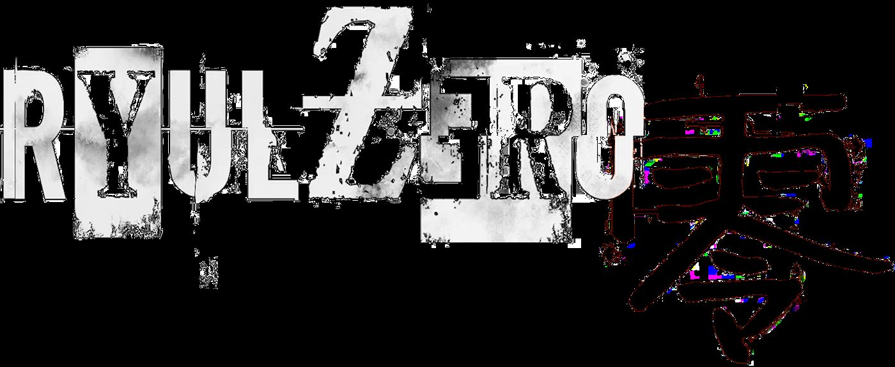
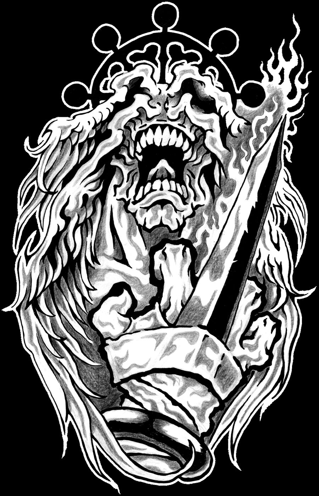
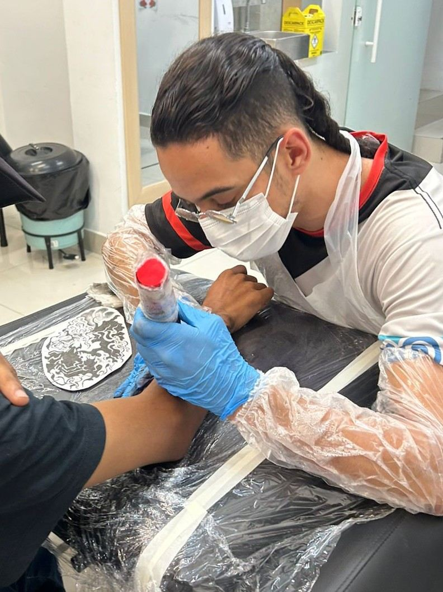

Ryulz Zero — Tatuagem Oriental, Anime e Blackwork


八握剣異戒神将魔虚羅
Role
01 Destaques
Meus trabalhos em destaque
01 Destaques
Meus
trabalhos
em destaque
01 / 01



02 Minha história
Comecei a desenhar aos 4 anos. Nunca mais parei.
Somando a predisposição para o desenho com a descoberta do mundo dos animes ainda criança, comecei uma jornada de aprendizado que virou paixão por desenhar mangá — e, depois, pela tatuagem, principalmente o estilo oriental.
Hoje, especializado em oriental, mesclo meu amor pelos mangás ao mundo das tattoos, respeitando todas as técnicas que tornam uma tatuagem uma arte durável e reconhecível.
ORIENTAL/ANIME/BLACKWORK
03 Portfólio
Portfólio
SUA HISTORIA
MERECE SER ETERNA
A agenda é limitada para manter cada projeto exclusivo. Garanta sua data.
Quero minha tattoo